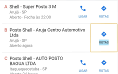

<ion-header mode="md" class="ion-no-border voice-assist__header">
  <ion-toolbar>
    <ion-buttons slot="start">
      <ion-button
        (click)="location.back()"
        slot="icon-only"
        class="voice-assist__header--back"
        fill="clear"
      >
        <ion-icon name="chevron-back-sharp"></ion-icon>
      </ion-button>
    </ion-buttons>
    <ion-title class="voice-assist__header--title"
      >Pesquisa por <br />
      Voz</ion-title
    >
  </ion-toolbar>
</ion-header>
<ion-content fullscreen class="voice-assist__content">
  <div class="align-center">
    <div class="voice-assist__content__chat">
      <div class="voice-assist__content__chat--mine messages">
        <div class="message voice-assist__content__chat--mine--last">
          Onde eu posso parar meu caminhão?
        </div>
      </div>
      <div class="voice-assist__content__chat--yours messages">
        <div class="message">
          Olá João! Você pode parar no posto de gasolina mais próximo.
        </div>
        <div class="message">
          Gostaria de ver as informações?
        </div>
        <div class="message voice-assist__content__chat--yours--last">
          
        </div>
      </div>
    </div>
  </div>
</ion-content>
<div class="voice-assist__footer">
  <div class="record-button">
    <div>
      <div></div>
    </div>
  </div>
</div>
